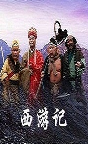

《西游记》是中国古代第一部浪漫主义章回体长篇神魔小说。现存明刊百回本《西游记》均无作者署名，清代学者吴玉搢等首先提出《西游记》作者是明代吴承恩。
全书主要描写了孙悟空出世及大闹天宫后，遇见了唐僧、猪八戒、沙僧和白龙马，西行取经，一路上历经艰险、妖怪魔法高强，经历了九九八十一难，终于到达西天见到如来佛祖，最终五圣成真的故事。该小说以“唐僧取经”这一历史事件为蓝本，通过作者的艺术加工，深刻地描绘了明代社会现实。
西游记》是中国神魔小说的经典之作，达到了古代长篇浪漫主义小说的巅峰，与《三国演义》《水浒传》《红楼梦》并称为中国古典四大名著。《西游记》自问世以来在民间广为流传，各式各样的版本层出不穷。明代刊本有六种，清代刊本、抄本也有七种，典籍所记已佚版本十三种。鸦片战争以后，大量中国古典文学作品被译为西文，《西游记》渐渐传入欧美，被译为英、法、德、意、西、手语、世（世界语）、斯（斯瓦西里语）、俄、捷、罗、波、日、朝、越等语言。